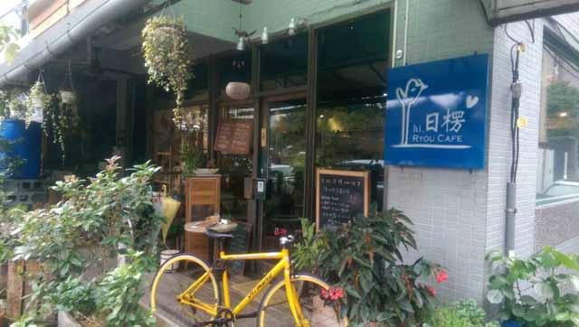
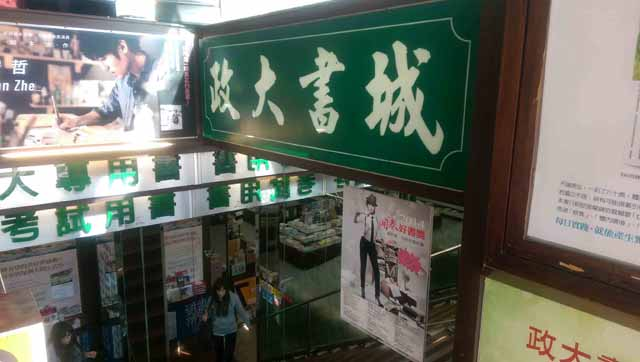
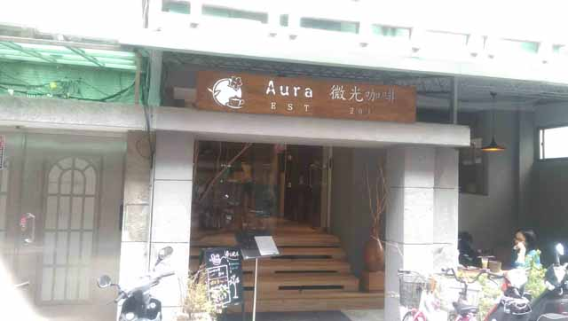
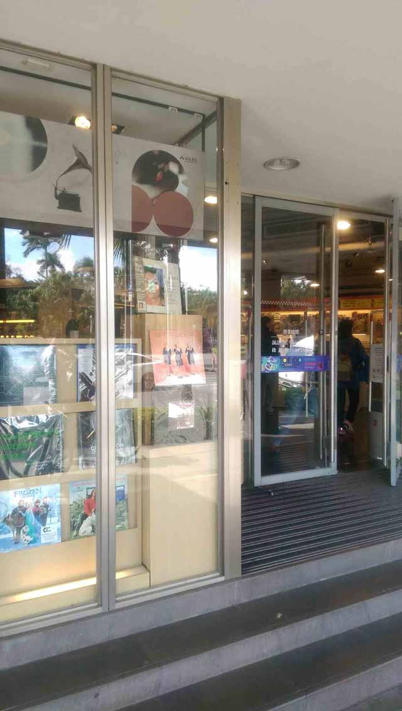
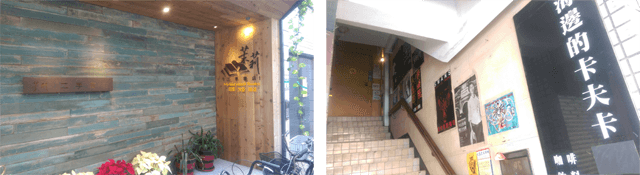

達人的旅遊新觀點


資深雜誌人和暢銷作家，1998年與好友集體創作《在台北生存的一百個理由 》，擔任《Shopping Design》與《小日子》創刊總編輯，最新個人作品《雜誌俱樂部，招生中》。
咖啡館．二手書店．老房子…… 黃威融

到台北想過波西米亞式的文青生活，首選是南區。建議你住在古亭站或者四號中和新蘆線靠近新北市那邊，展開台北文青一日生活。
早上八點，去台電大樓站附近浦城街的日楞咖啡吃早餐，別以為文青都是晚睡晚起，日楞咖啡是作晨起人的生意，它選用的食材來自台灣本地小農，整間店從菜單到牆壁黑板的文字都是手寫，點餐後的上菜速度不快（請耐心等），它的蛋料理、麵包和生菜都好吃。
吃過早餐，建議散步跨過羅斯福路、沿著汀洲路走到同安街的紀洲庵文學森林，這棟日治時代保留至今的老房子現在常常舉辦藝文座談，不過它的建築和週邊環境也很值得欣賞，建議白天來。
接著往回走到師大路，轉進龍泉街，去舊香居這間收藏了許多文史藝術的舊書店尋寶，這裡的書和空間佈置都是店主人費心思整理的，如果你真的是熱愛藝文的文青，你一定會買些書帶走的。舊香居外頭有好幾個專賣水果的攤子，順便買些帶著吃。
往公館方向移動，拜訪羅斯福路三段台電大樓對面位在地下室的政大書城，雖然說網路書店很方便，但是政大書城依然是許多愛書人固定要去的地方，它的售價跟網路書店相比仍有競爭力，它的陳列方式是按照出版社而不是主題，這對於出版領域的工作者找書比較方便（我們常會特地找某某出版社的什麼書）。
書店逛一逛通常需要找個咖啡館坐坐，羅斯福路三段巷內的微光咖啡，是這幾年新開的咖啡館裡最能延續90年代公館文青咖啡館始祖挪威森林味道的新生代，坐下來喝杯咖啡之外，也要花點時間看看店內擺設的藏書。隔幾條巷子的永樂座，有賣新書也有賣二手書，偶爾也有舉行座談，繞去看看吧。
不要錯過台大正門對面的誠品書店，誠品台大店可說是誠品在台北市內很有自己風格的一間店，如果要比藏書量信義店的確最強，比人氣敦南店還是第一，台大店因為位在大學校園旁，它常針對青春族群和學術主題推薦書展和櫥窗陳列，很有看頭。就算是所謂的每月新書推薦平台，誠品台大店的書種選擇和陳列也會跟敦南或信義不同。同一棟樓的四樓是若水堂簡體書店，如果想了解最近中國市場出了什麼新書，若水堂進書的速度很快，此外有些比較小眾或專門的書也會出簡體書，例如歐美搖滾歌手的傳記、歌詞集都是很搶手的好貨。
逛了誠品和若水堂，走到羅斯福路三段另一面，可以去海邊的卡夫卡這間以村上春樹小說書名當作店名的咖啡喘口氣，同棟大樓的地下室是常有現場演出的河岸流言。往巷內走，知名的二手書店茉莉書店在這兒有間專賣影音專輯的店，國台語流行音樂、西洋東洋專輯、古典音樂、電影戲劇貨色很多。往公館方向前進，茉莉書店台大店位在熱鬧服飾店群聚的某條巷內，茉莉書店的空間舒適，書籍種類多，特別推薦來此找過期雜誌，本地和美日雜誌都常有意外驚喜。
晚上想看Live表演的話，公館那頭的The Wall這牆常有國內外樂團表演，建議提前買票比較妥當。看完表演後若想宵夜，走遠一點，回到早上日楞咖啡附近的公園旁邊，有家以一夜干聞名的屋台料理，是許多藝文人愛去的店。台北南區真的很好逛，希望你大豐收。
information- 日楞咖啡，浦城街24-1號
- 紀洲庵文學森林，同安街107號
- 舊香居，龍泉街81號
- 政大書城，羅斯福路三段301號B1
- 微光咖啡，羅斯福路三段269巷9號
- 永樂座， 羅斯福路三段283巷21弄6號一樓
- 誠品台大店路，新生南路三段98號
- 若水堂簡體書店， 新生南路三段98號四樓
- 海邊的卡夫卡，羅斯福路三段244巷2號二樓
- 茉莉書店影音館，羅斯福路三段244巷10弄17號
- 茉莉書店台大店，羅斯福路四段40巷2號一樓
- The Wall， 羅斯福路四段200號B1